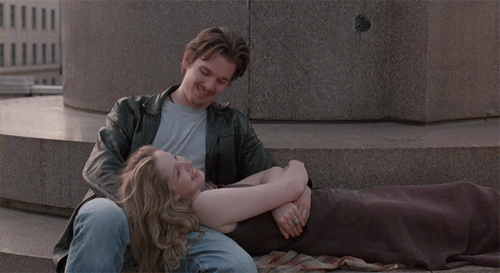

Before Sunrise Script, Scene 36, Page 63
A discussion between the two protagonists, Celine and Jesse, on traditional and personal ideas of love:
C: No, no, no. Okay, speaking seriously here. I mean, I feel this pressure to be a strong and independent icon of womanhood and not have it look like my life is only revolving around some guy, but the love of a man and returning that love means a lot to me. I always make fun of it and stuff, but isn’t everything we’re doing in life a way to be loved a little more or something?
J: Sometimes I dream of being a good father and a good husband. Sometimes that feels really close, but other times it just seems silly, and that it would ruin my life. It’s not that I have a fear of commitment or I’m incapable of loving or caring about someone else, because I can. It’s just that if I’m totally honest with myself, I’d rather die knowing that I was really good at something, that I was special or had excelled in some way, than to have only been in a really nice, caring relationship.
C: You know, I had worked for this older man, and once he told me that he had spent all his life thinking about his career and his work, and how he was fifty-two and it suddenly struck him that he had never really given anything of himself, that his life was for no one and nothing.
He was almost crying saying this. (a beat) I really believe that if there’s any kind of god, he wouldn’t be in any one of us - not you, not me - but just this space in between.
If there’s some magic in this world, it must be in the attempt of understanding someone else, sharing something, even if it’s almost impossible to succeed. But who cares - the answer must be in the attempt.
full script here.

Celine:
No, no, no. Okay, talking seriously here.
I mean, I always feel this pressure to be a strong and independent icon of womanhood and not making it look like my life is revolving around some guy,
but... loving someone and being loved means so much to me.
I always make fun of it and stuff, but isn’t everything we’re doing in life a way to be
loved a little more?

Jesse:
Yeah. I don't know.
Sometimes I dream about being a good father and a good husband.
And sometimes that feels really close, but then other times...
it seems, silly, like it would, uh, ruin my whole life. And it’s not just a - a fear of commitment or that I’m incapable of caring or loving, because, I can.
It’s just that, if I’m totally honest with myself, I think I'd rather die knowing that I was really good at something, that
I had excelled in some way, than that I'd just been in a nice, caring relationship.
Celine:
Yeah. You know, I had worked for this older man, and once he told me that he had spent all his life thinking about his career and his work, and he was fifty-two and it suddenly struck him:
that he had never really given anything of himself,
his life was for no one and nothing.
He was almost crying saying that.
You know, I believe that if there’s any kind of god,
it wouldn’t be in any of us - not you or me -
but just this little space in between.
If there’s any kind of magic in this world, it must be in the attempt of understanding someone, sharing something.
I know,it’s almost impossible to succeed but,
who cares really?
The answer must be in the attempt.
